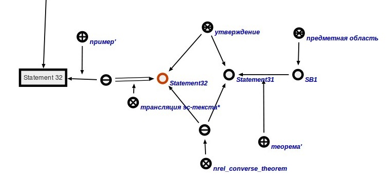
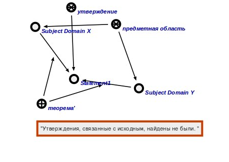

Команда поиска связей утверждения с другими утверждениями предназначена для поиска утверждений в рамках одной предметной области, которой принадлежит исходное утверждение, т.е. утверждений, являющихся обратной теоремой*, противоположной теоремой*, теоремой, противоположной обратной*, а также утверждений, являющихся следствием*. Аргументами команды являются утверждение, для которого происходит поиск, узел ответа, к которому привязывается результат поиска. Результатом выполнения команды является предметная область, если исходное утверждение принадлежит таковой, а также утверждения, связанные с исходным утверждением через отношения обратная теорема*, противоположная теорема*, теоремой,противоположной обратной* либо следствия*. Для утверждения будет построена следующая конструкция:

В случает отсутствия связи утверждения с другими утверждениями будет выведено сообщение вида:
